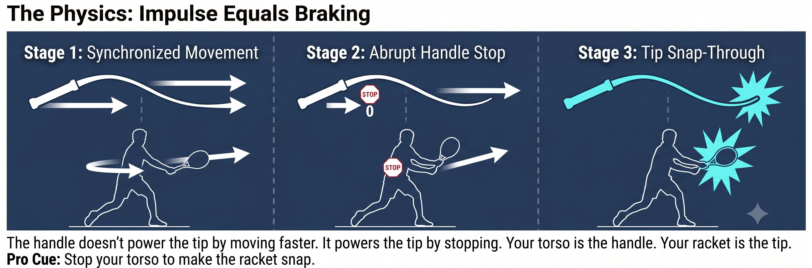

Chương 15: Phanh Và Xung
(Bản dịch tiếng Việt của Chapter 15 trong Sổ Tay Quần Vợt Thống Nhất)
PHANH & XUNG
Xung 1-Inch / Fa Jin (Phanh, Xung)
Công suất chưa bao giờ là chuyện bạn vung xa bao nhiêu. Đó là xung lực — một khoảng thời gian ngắn mang theo một lực khổng lồ. Phanh chính là công suất.
Để làm đầu vợt bùng nổ từ một vung nạp ngắn, bạn gia tốc cơ thể, rồi phanh nó lại đột ngột. Năng lượng phải đi đâu đó — nó bắn thẳng sang mắt xích tiếp theo trong chuỗi.
— Henry Phạm

Hình 15.1
Vật Lý: Xung Lực Bằng Phanh
Công suất trong quần vợt chưa bao giờ là chuyện bạn vung xa bao nhiêu. Đó là xung lực — lực nhân với thời gian, nhưng được trao ra trong một khoảng cửa sổ rất ngắn. Giống như quất một cây roi: cán roi dừng lại, và đầu roi bật ra.
Nguyên Lý Cốt Lõi
Phanh chính là công suất. Không phanh nghĩa là bạn cần một cú vung dài, lượn để xây dựng tốc độ. Phanh cứng nghĩa là một cú vung ngắn với tác động cao.
Forehand Push: Xung Lực Gọn
Thay vì một vòng lặp lớn, hãy nghĩ theo bốn bước:

Hình 15.2
1. Nạp nhỏ: khuỷu tay giữ ở trước người, và đầu vợt chỉ nằm khoảng 12 inch phía sau tay. Đường xoắn ốc căng ra, nhưng vẫn ngắn.
2. Gia tốc chân và hông: chân sau đẩy tới và hông bắt đầu mở ra.
3. Phanh: chân trước duỗi thẳng và giậm mạnh, hông trước đập vào một bức tường. Cơ chéo bụng kích hoạt để dừng sự xoay của thân người một cách đột ngột. Bạn nên cảm thấy chân trước và bụng bất chợt siết chặt — đó chính là cú phanh của bạn.
4. Bật: vì thân người đã dừng lại, tay và vợt buộc phải vèo xuyên qua. Cảm giác đẩy của lòng bàn tay trở thành một cú xung — một inch đẩy xuyên qua, không phải một follow-through dài.
Mẹo Huấn Luyện
Lỗi thường gặp số 1: "ngắm nhìn trái bóng" — đầu ngẩng lên và thân người vẫn tiếp tục xoay. Phanh trước, rồi mới thả mắt ra sau. Quy tắc là chân trước, tay sau.

Hình 15.3
Backhand Saber: Xung Lực Gọn
Cú này còn là một cú đấm 1-inch sắc bén hơn nữa:
1. Nạp nhỏ: cây vợt giữ gần người, khuỷu tay cao nhưng nép sát vào cơ thể. Lưng xô căng ra.
2. Gia tốc: chân sau đẩy tới và hông mở nhẹ.
3. Phanh: chân trước phanh lại trong khi ngực vẫn giữ nghiêng bên — đừng bao giờ để ngực mở ra phía lưới. Phanh ngực chính là thứ làm cho saber bật.
4. Bật: lưng xô và cơ tam đầu bật cạnh vợt xuyên qua. Cảm giác là một cú chặt ngắn xuống dưới, ba inch xuyên qua bóng, rồi dừng — không bao giờ là một follow-through dài.
Mẹo Huấn Luyện
Xung lực của saber còn là một "cú đấm 1-inch" sắc bén hơn cả forehand. Follow-through dài nghĩa là bạn không phanh — đó chỉ là một cú vung tay, không có xung lực nào cả. Cảm giác là một cú chặt ngắn xuống dưới, ba inch xuyên qua bóng, rồi dừng. Cây vợt kết thúc ở vị trí cao, nhưng bạn đã dừng chuyển động lại.
Vì Sao Điều Này Hoạt Động Với Mọi Thứ Đã Xây Dựng
Quy Tắc
Cú xung 1-inch không phải là một cú vung. Đó là một cú phanh theo sau bởi một sự giải phóng. Phanh thật cứng, và để đường fascia bật ra.
Huấn Luyện Xung 1-Inch — Không Cần Sân Lớn
1. Xung đẩy vào tường: đứng cách tường một inch, đáy cán vợt chạm tường, lòng bàn tay ở phía sau. Không có vung nạp nào cả, đẩy sao cho đáy cán vợt lún vào tường rồi thả ra ngay lập tức. Cảm nhận đường xoắn ốc bắn từ chân đến lòng bàn tay — không có tay tham gia.
2. Drill phanh chân trước: shadow-swing một cú forehand, chỉ tập trung vào chân trước. Khi bạn vung, gối trước duỗi cứng và bạn nói "dừng". Cây vợt phải nứt lên sau khi dừng, không bao giờ trước đó — nếu vợt động trước khi dừng, nghĩa là không có xung lực.
3. Drill dừng saber: đánh một cú backhand và đóng băng cây vợt 12 inch sau tiếp xúc. Đừng để nó cuốn quanh. Dừng nhanh như vậy nghĩa là bạn đã phanh đúng. Không dừng được nghĩa là bạn đã vung dài mà không hề phanh.
4. Điều tiết xung lực: đối tác hô "20%, 50%, 100%". Bạn giữ nguyên cùng một mức nạp nhỏ và cùng một cú phanh, chỉ đổi cường độ của xung. 20% là một xung rất nhỏ. 100% là một xung rất nhỏ cộng một cú phanh cứng. Đưa vợt ra xa phía sau cho quả bóng 100% và bạn đã mất nó rồi — một vung nạp lớn không phải là công suất, đó chỉ là một số 8 chậm.
Quy Tắc
Một mức nạp nhỏ, một cú phanh cứng, và một cú xung 1-inch tạo ra nhiều tác động hơn, tốn ít thời gian hơn, và để lại ít chỗ hơn cho những thứ có thể sai.
Danh Sách Kiểm Tra Xung 1-Inch
NẠP NHỎ. PHANH CỨNG. XUNG 1-INCH.
– Vung nạp: một mức nạp nhỏ, đầu vợt chỉ cách tay 12 inch.
– Gia tốc: chân và hông khởi động chuyển động.
– Phanh: chân trước duỗi thẳng và giậm mạnh, hông trước đập vào tường, cơ chéo bụng dừng thân người lại.
– Bật: vì thân người đã dừng, tay và vợt vèo xuyên qua — lực đẩy của lòng bàn tay trở thành một cú xung.
– Xung: một inch đẩy xuyên qua, không bao giờ là một follow-through dài.
– Nếu gối trước sụp xuống sau cú đánh, nghĩa là bạn đã mất root và không có xung lực nào cả.
– Huấn luyện với: xung đẩy vào tường, drill phanh chân trước, drill dừng saber, và drill điều tiết.
Chương Này Dẫn Đến Đâu
Chương này thiết lập cú phanh cộng cú xung — phát kình (fa jin) — như biến số trong hệ thống Q-V-ROOT-8-45-Impulse-Kình CORE. Chương 16 bao quát kình như ba biểu hiện: nghe (ting), hóa (hua), và phát (fa). Chương 17 bao quát bước chân hư-thực chuyển đổi. Chương 18 bao quát sự bén rễ.